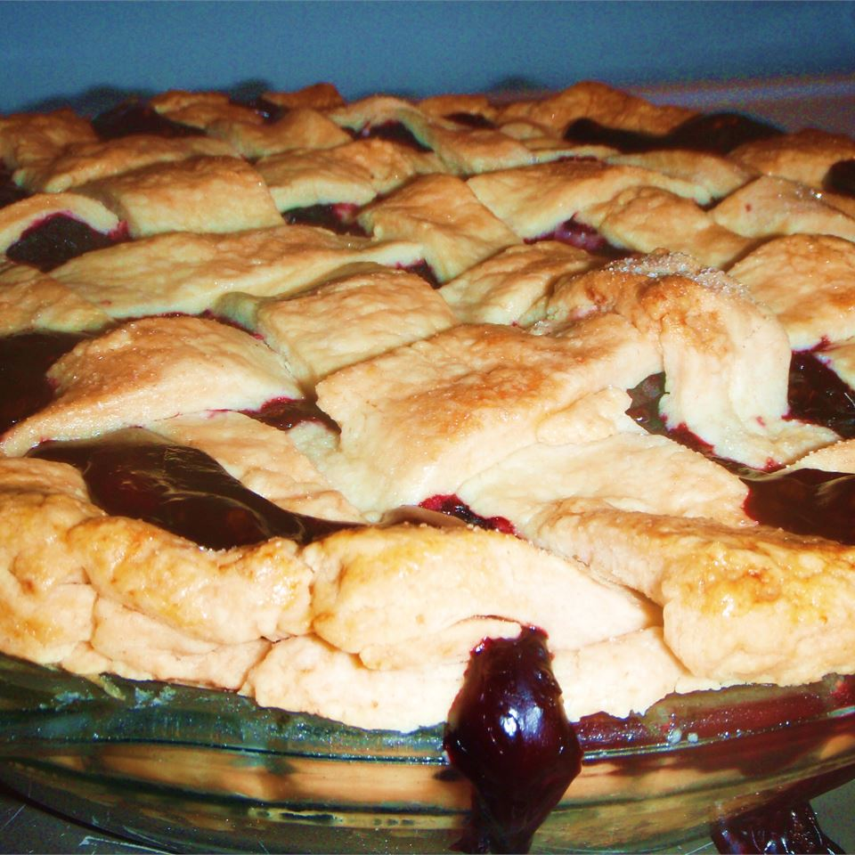

Brigid's Blackberry Pie
Description
Blackberries are a plant sacred to the Irish Goddess Brigid and the Norse thunder God Thor! This simple recipe will bring you back to the Old Religion in no time!
Ingredients
- 1 (15 ounce) package pastry for a 9 inch double crust pie
- 4 cups fresh blackberries
- 1 ½ cups white sugar
- ½ cup all-purpose flour
- ¼ teaspoon salt
- 1 tablespoon butter
Steps
- Preheat the oven to 325 degrees F (165 degrees C). Line a 9 inch deep dish pie pan with one of the crusts.
- Place the blackberries in a large bowl. Stir together the sugar, flour, and salt. Sprinkle over the berries, and toss to coat. Pour into the pie crust. Dot with butter. Place the other pie crust over the top, and secure to the bottom crust by pressing with a fork, or fluting with your fingers. Cut a design in the top crust with a sharp knife to vent steam.
- Bake for 1 hour in the preheated oven, or until the top crust is browned. Let cool to almost room temperature before serving to allow the filling to set.